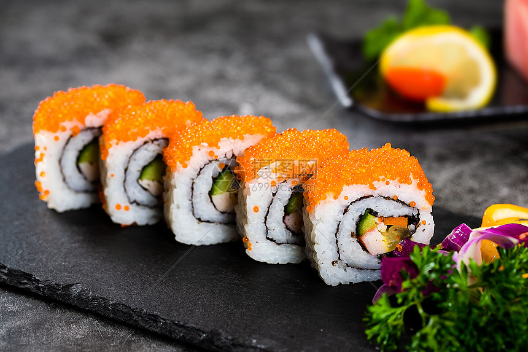
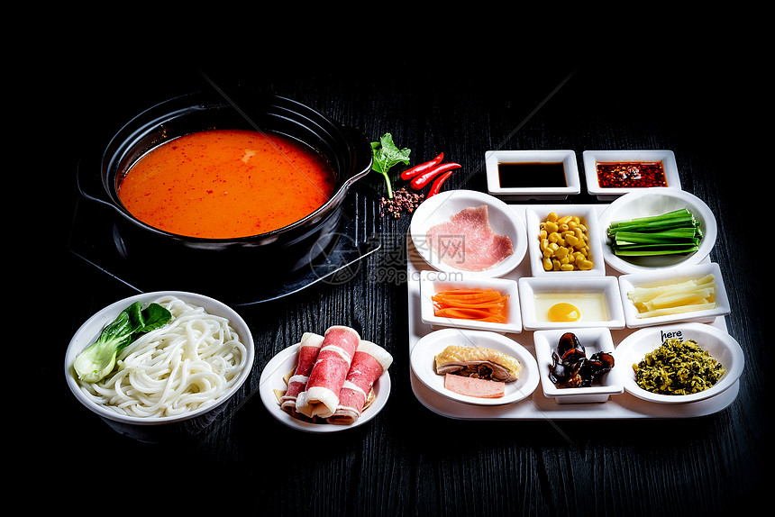
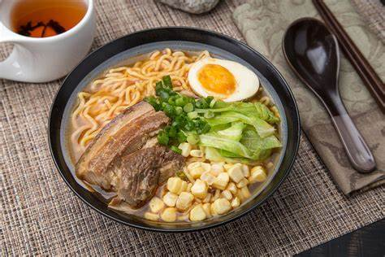

Delicious Food
Sushi: A fusion of seafood and craftsmanship As a representative of Japanese cuisine, sushi has conquered the taste buds of diners around the world with its exquisiteness and freshness. Its production seems simple, but it actually contains deep craftsmanship. Fresh sashimi, such as tuna, salmon, sea bream, etc., are cut into thin slices and spread on soft and glutinous vinegar rice. The acidity and temperature of the vinegar rice must be precisely controlled to complement the sashimi.
Washoku: the art of refinement and balance. Washoku refers to traditional Japanese cuisine, which emphasizes the original flavor and seasonal characteristics of ingredients, and pays attention to the harmonious unity of color, fragrance, taste, shape, and utensils. It is a refined and balanced food art performance. Each dish is moderately portioned, allowing people to taste a variety of different flavors without feeling too full, which fully reflects the ultimate pursuit of balanced nutrition and dining experience in Japanese cuisine.
Ramen: passion in rich soup. Ramen is the soul of Japanese street food. The key to a bowl of authentic ramen is the rich and mellow soup. The soup of tonkotsu ramen is made from pork bones for a long time, and every mouthful is full of the rich aroma of pork bones. The chewy noodles fully absorb the essence of the soup in the soup, and are paired with barbecued pork, bamboo shoots, seaweed, chopped green onions and other side dishes. A bowl of steaming ramen can always dispel the cold, comfort the body and mind, and let people immerse themselves in this rich and delicious taste.